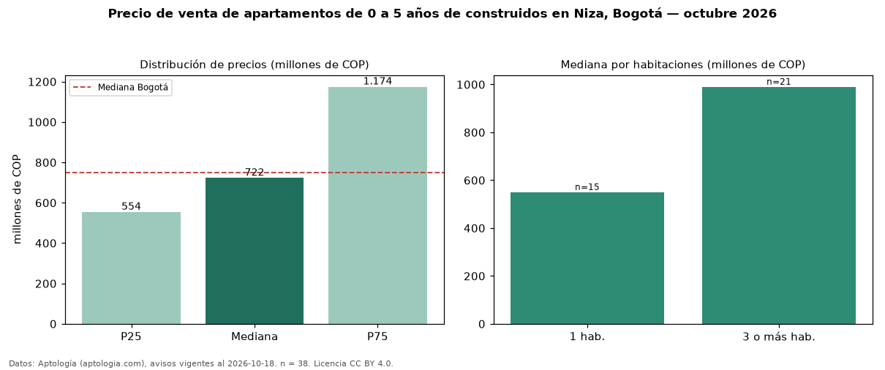

Precio de venta de apartamentos de 0 a 5 años de construidos en Niza, Bogotá — octubre 2026
En Niza (localidad de Suba), Bogotá, la mediana de precio de venta de apartamentos de 0 a 5 años de construidos es COP 722 millones, según 38 avisos vigentes. Prácticamente coincide con la mediana de todos los apartamentos en venta de Niza (COP 735 millones, n = 102); este segmento reúne el 37 % de esos avisos. Por metro cuadrado, la mediana es COP 8,00 millones/m² (n = 38), 28 % por encima del conjunto de referencia (COP 6,25 millones/m²). El área mediana anunciada es 106 m². El segmento con más oferta es el de 3 o más habitaciones (21 avisos, mediana COP 990 millones); pasar de 1 habitación a 3 o más habitaciones cambia la mediana +80 %. La administración mediana declarada es COP 610.000 al mes (n = 32). La mitad central de los avisos va de COP 554 millones a COP 1,17 mil millones (razón 2,1), una dispersión alta. El estrato más frecuente es 5 (70 % de los avisos con estrato). Datos: Aptología (aptologia.com), CC BY 4.0 — https://www.aptologia.com/venta/bogota/niza. Archivos: PDF, CSV con las cifras y gráfica PNG.

| Avisos únicos | 38 |
|---|---|
| Percentil 25 | COP 553.750.000 |
| Mediana | COP 722.500.000 |
| Percentil 75 | COP 1.174.198.500 |
| Mediana por m² | COP 8.003.809 |
Fuente: avisos vigentes de portales inmobiliarios recopilados por Aptología, deduplicados (mínimo 30 avisos únicos por celda). Precios pedidos, no cerrados. Fecha: 2026-10-18.